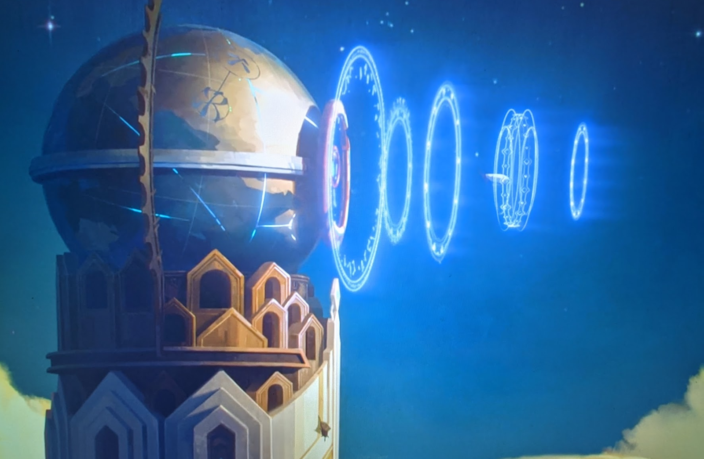
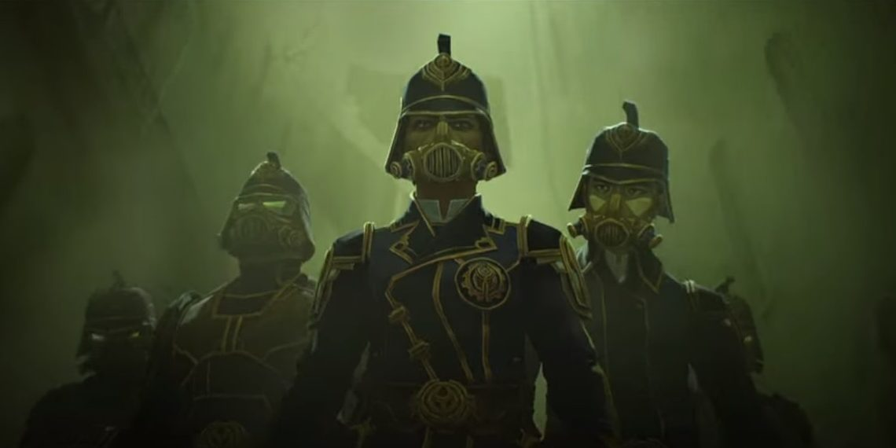

Hextech is a magical technology that harnesses the elemental and spirit magic in rare crystals to power virtually anything. The finest thing is that it can be used by anybody, not just those born with magical abilities. There are numerous ways that they have discovered uses and forms of Hextech including
The Hexcore is an adaptive rune matrix, or "hextech that evolves," as Viktor puts it. Much about the Hexcore is still unknown, but it responds to organic matter. That being said, earlier trials and studies showed that the mutations brought by the Hexcore were unsustainable and disintegrated quickly.
Hexgates are ports to the rest of the world, built on Hextech. Piltover has been able to operate as a global shipping lane thanks to the Hexgates, securing the council's and the city's prosperity.
Shimmer is the serum developed by Silco and his scientist that turns humans into frenzied monsters. Shimmer can be utilised in a variety of ways, including smearing on the skin, injecting it, and swallowing it. The creature that consumes it develops superhuman abilities, such as increased strength and speed, in addition to experiencing a transient increase in body size, it also has an immediate effect on the user. However, the negative affects are just as prominent. If Shimmer is used inappropriately, the user will develop a terrible addiction to the drug after exhausting the effects. After transforming, they may get permanent scarring and growths on their bodies, while others may become weaker in certain circumstances if they do not take the serum for an extended period of time.
Enforcers are the peacekeepers of Piltover. They are in charge of maintaining law and order, as well as preventing, detecting, and investigating unlawful behaviour. Enforcers are Piltover's equivalent of the police force.
The Council is the body in Arcane. They are the major decision-makers who are self-selected by former Council members and generally have accomplishments that warrents their appointment.
Return to the top of the page.